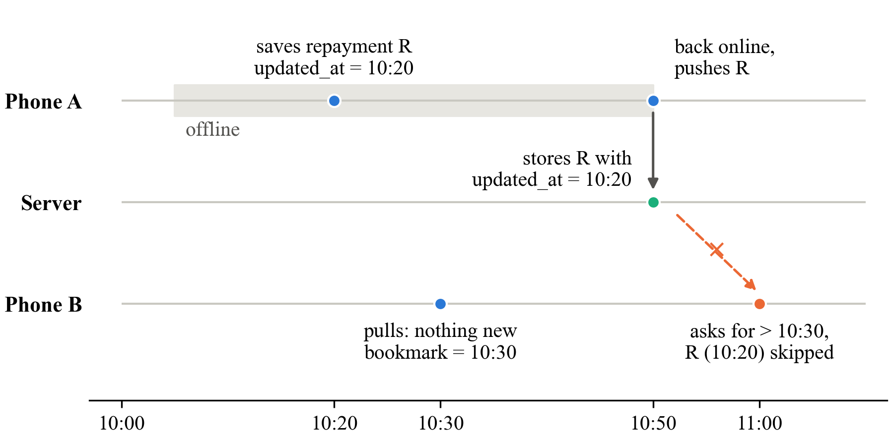

SmartOps works offline. Every entry is saved on the phone first, and phones sync with the server later. When a phone syncs, it asks the server: "give me everything newer than my last sync."
But "newer" is judged by the time written on the phone that created the entry, not the time the server received it. So an entry made offline and uploaded later looks "old" and gets skipped by another phone.

Phone B keeps showing Ramesh owes ₹500 more than he really does.
Phone stamps updated_at (actions.js:340); server filters updated_at > last sync (syncController.js:96).
Phone keeps 99.999, server rounds to 100.00, so there's a paise-level gap.
We compare three ways of deciding what a phone should download:
Record keeps the time it was written on the phone. This is the one with the bug.
Server writes its own time when the record arrives. R becomes 10:50, so B gets it.
Server gives each record the next number, like a bank token. B asks "after token 57", gets 58.
SYNC_MODE in our backend to pick one of the 3 methods.on the server but not on a phone
how far phone balances are off
does the fix slow it down?
does the fix use more data?
| # | In plain words | Test | We are wrong if… |
|---|---|---|---|
| H1 | The three methods miss different amounts. Phone time misses records, server methods almost none. | Chi-square | all three miss about the same |
| H2 | With phone time, longer offline means more missed records. | Kruskal–Wallis | 2 h offline isn't worse than 5 min |
| H3 | The fixes don't make sync noticeably slower (under 10%). | Kruskal–Wallis | the fixes are clearly slower |
Count missed vs delivered records for each method, and check if the difference is too big to be luck.
Rank all runs from low to high and check if one group is consistently higher. No bell curve needed.
Weeks 1–3: trace and prove the bug · 3–6: build fixes and simulator · 7–9: run 180 tests · 9–12: analysis and report.
All free software; our own laptops and phones. The money is for printing, travel and a little mobile data. No people involved, all data is made up.
"Our khata app works offline and syncs later. It decides what other phones should download using the time on the phone that made the entry. So a repayment saved offline and uploaded later can be skipped forever by the shop's second phone, and the two phones then show different balances. We'll measure how often this happens with a script that acts as three phones against our real server, over 180 runs. Then we'll compare two fixes: server time and a server counter. We measure missed records, the rupee gap and the cost, and recommend one."